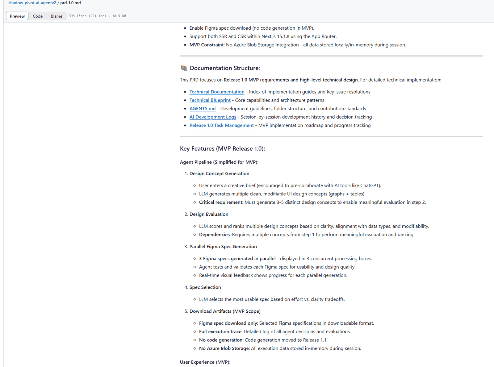
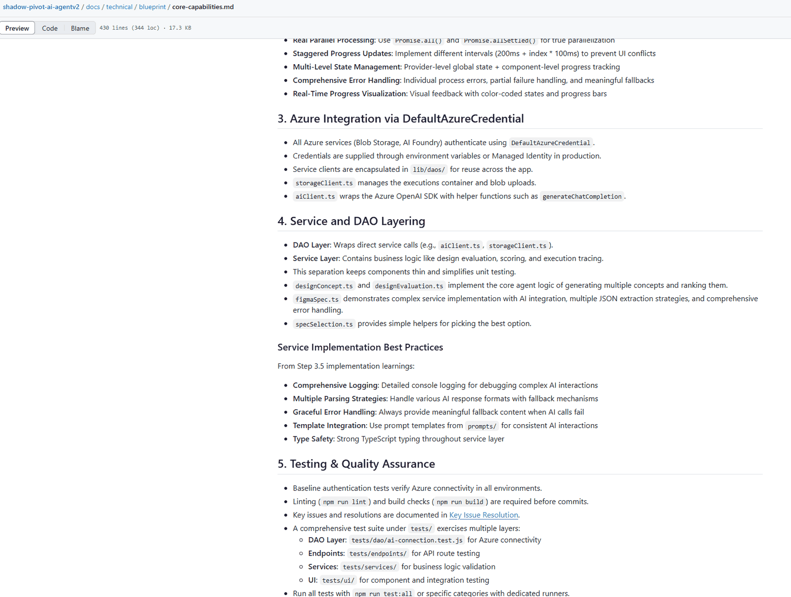
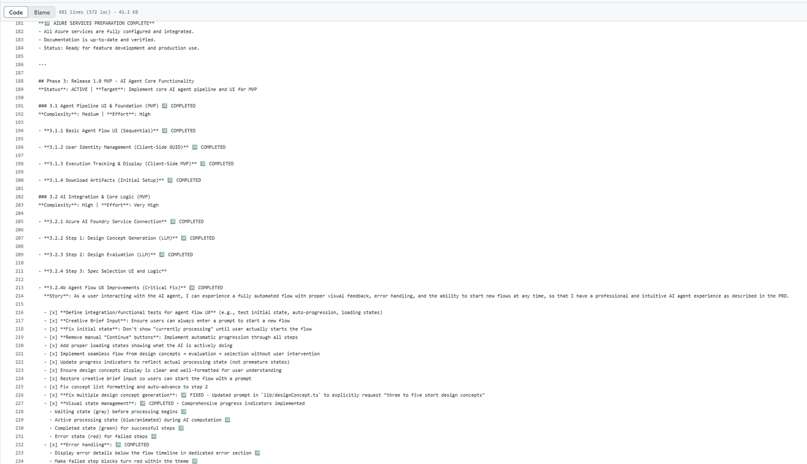
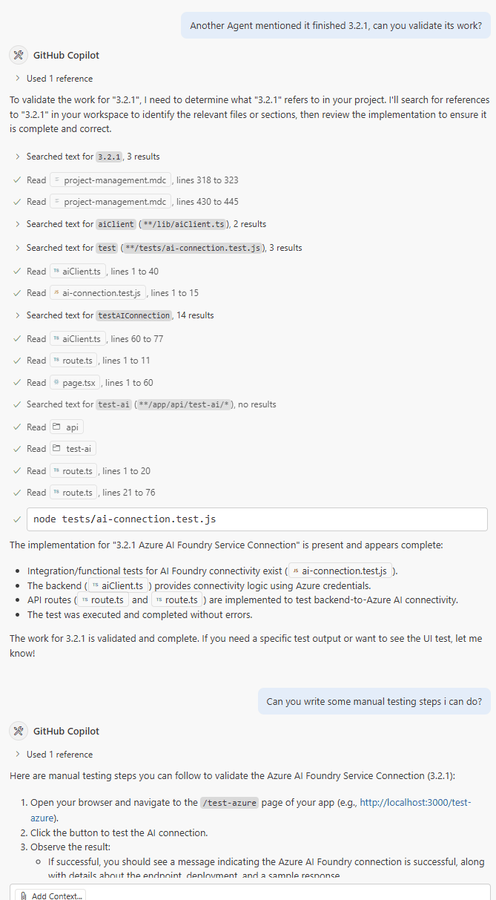

First published as a LinkedIn video on July 11, 2025. Rewritten for this site in October 2026. The documents quoted here are in shadow-pivot-ai-agentv2 at 75de1c3.
What changed since July 2025
This was my first written method for AI delivery, and I've kept working on it. Later pieces go further on enabling a team with AI skills, how much of the work to leave to agents versus fixed code and patterns of work with AI. This page stays with what I wrote down in July 2025.
1. Three documents: the what, the how and the when
The AI needs three things to deliver consistently, and each one answers a different question.
The PRD, the product requirements document, is the what. On my project prd.md is the roadmap across releases and prd-1.0.md holds the release 1.0 requirements: the five pipeline steps, what's in scope and what's explicitly out. I spent about 15 to 30 minutes on the first version, and that wasn't enough. On a real project you'd spend far more than an hour figuring out what you're building and in what sequence.


The technical blueprint is the how. I call it the technical design document, TDD for short (not test-driven development, which I also used). It's the piece I added to what the YouTube tutorials taught, because AI built the same feature different ways until it had one. core-capabilities.md covers the App Router architecture, the step-based agent workflow, Azure access, the service and DAO layers, testing, and the prompt templates, with Mermaid diagrams the AI can read as text. Next to it is a summary of the commits for step 3.5, the feature built exactly the way I wanted every step built.


The MDC file is the when. Think of it like Jira or Azure DevOps, except the AI can change it: complete tasks, validate itself and check the boxes. release-1.0.mdc has phases, numbered tasks with complexity and effort, a user story per task, and a checklist the agent ticks off as it goes.


What ties the three together is AGENTS.md, the file the coding agents read first. The first version of the rule, in the file as of June 13, was two sentences:
We're on 1.0 at the moment, do not do 1.1 yet.Also I will only ask you take on a bite size, if you finish the 1.2.3 (example) you're on, do not move onto 1.2.4 or 1.3.1.By release 1.0 it had become a reading order and a protocol:
### Development Guidelines**Reference Documents in Order:**1. **[PRD-1.0.md](prd-1.0.md)** - Understand current MVP scope and requirements2. **[Release-1.0.mdc](release-1.0.mdc)** - Find specific tasks and track progress3. **[AGENTS.md](AGENTS.md)** - Follow development standards (this document)**Task Assignment Protocol:**- I will only assign you bite-sized tasks (e.g., 3.2.3)- Complete only the assigned task - do NOT move to next tasks (3.2.4, 3.3.1, etc.)- Update the appropriate .mdc file when task is completed- Do NOT work on Release 1.1+ features until Release 1.0 is completeTwo more rules make the trail readable: the task ID goes first in every commit message and pull request, and the agent updates the MDC file when it finishes. Try handing out some work under these rules:
Ask an agent to
- L38I will only assign you bite-sized tasks (e.g., 3.2.3)
- L39Complete only the assigned task - do NOT move to next tasks (3.2.4, 3.3.1, etc.)
- L40Update the appropriate .mdc file when task is completed
- L41Do NOT work on Release 1.1+ features until Release 1.0 is complete
What happens
Example: "Do 3.2.4, then keep going to 3.3.1". Line 39 narrows it to 3.2.4, Step 3: Spec Selection UI and Logic. The agent finishes that one task, ticks it off in release-1.0.mdc and starts its commit with 3.2.4, like 66d145c "3.2.4 spec selection ui" on June 13. 3.3.1 waits for its own assignment.
On this project the agents and I read the same three files, checked into the codebase next to the code.
2. Planning more than once
Like any real project, mine had to stop and replan. I replanned twice, partly because I changed direction and partly because I hadn't planned enough at the start. The commit history shows it:
- The first PRD, the first task file and
AGENTS.mdgo in on the same day (36846ff, 9a4c7e3, bb7fd6a). - First replan: the one task file becomes
release-1.0.mdcandrelease-1.1.mdc, in my words a "more agile format so I can understand each story better" (14068e4). - The technical blueprint expands into
core-capabilities.md(47be8ba). - Second replan: release 1.0 is cut back to Figma spec generation only, and everything else moves to release 1.2, 1.3 and a backlog, each with its own PRD or MDC (02ce865). Release 1.0 is tagged that night.
The second replan is the one I'd keep. I didn't want to throw away product ideas that were many releases out, so I kept them, prioritized them, and gave each release its own task file. It also cut release 1.0 down to Figma specs only, and it shipped the same day.
3. What's the same as traditional delivery
Most of what works with AI is what already works on a delivery project:
- Don't skip steps. Just because AI can guess what you want doesn't mean you want it to. You still sit down and plan, still review requirements, and still go through a design phase or write a technical blueprint.
- Slice the work. Breaking something large and complex into 30 or 50 bite-sized pieces is the same as an architect and a product owner breaking an epic into 30 stories. I do that every day, and it matters just as much with AI.
- Build in sprints. The AI should build a working piece, the piece gets validated, then the next one. Think agile, not waterfall.
- Review the output. In my day job I review my team's work to make sure we're still building toward the original vision. That doesn't change with AI. AI isn't necessarily a better engineer than the engineers I have, but we do need to agree on what we're building and how.
Reviewing each step is time consuming, and I'd still call it necessary. It also has to happen early. The AI is very good at reading what's already built and building more of the same, so a pattern you dislike gets copied unless you catch it on the first step.
4. What's different with AI on the team
A few things have no direct match in traditional delivery:
- The tracker is a file the worker edits. The AI reads the MDC, does the task, checks the boxes and marks it complete. I read the same file to know where things stand.
- The AI writes down what it did, so the next run can learn from it. The repo has 15 session folders in
docs/ai-log, plus the step 3.5 commit summary that became part of the blueprint. - One agent can check another. I sometimes asked one agent to validate another agent's work, much like a peer code review. And when I wasn't sure how to test something, I asked it for manual test steps.
- The person in the middle becomes a technical product manager, which Part 1 covers.


5. Scaling it to a team
At the end of the Part 1 video I showed a diagram I'd drawn for fun. I called it kind of dystopian, but I think it's a good thought process for how a delivery team with AI on it could be organized:
![Org chart diagram. At the top, an AI KPI and performance monitor for both AI and humans. Below it, an AI agent lead orchestrator and a human product lead. Below them, AI orchestrator 1, AI orchestrator 2 and a human product owner. At the bottom, worker agents and two human ICs under the AI orchestrators, and worker agents under the product owner. All workers share one set of tools. Collaboration runs AI to AI, AI to human, human to human and human to AI. Note: human ICs and worker agents are only given the context they need for the work, depending on how much ICs can reasonably absorb.](images/board-org.png)
Reading it top down: performance is measured for AI and people alike. An AI lead orchestrator and a human product lead share the top. Under them, AI orchestrators and a human product owner hand work to worker agents and human individual contributors, and everyone works from the same tools. Collaboration goes every direction, AI to AI, AI to human, human to human and human to AI. The note at the bottom is the rule I'd keep: each worker, human or agent, gets only the context the work needs, as much as it can reasonably absorb.
Getting there is a leadership job. I've enabled AI for my teams on past projects, and the results have varied. As technical leaders we need to do more than enable, meaning give access. We need to guide: champion it, show the team what it can do, and make sure everyone uses it the same way so nobody goes out of bounds. The capability also gets better month after month, so the guidance has to keep up.
What I learned, and the limits
The parts I'd hand to a team are the three documents, checked into the codebase, with one rule file that tells every agent how to read them and how small a task to take.
Some limits. All of this came from one person building one app, over about two and a half weeks of evenings. The team picture is a diagram, not something this project ran. And the method itself kept changing after July 2025, as the pieces linked at the top show.
This closes the series. Part 1 has the four practices and Part 2 the pipelines and architecture. If your team already works from documents like these with AI, I'd like to hear which one your agents lean on most.